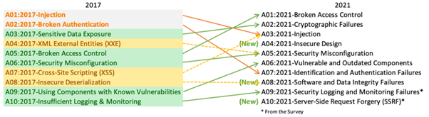
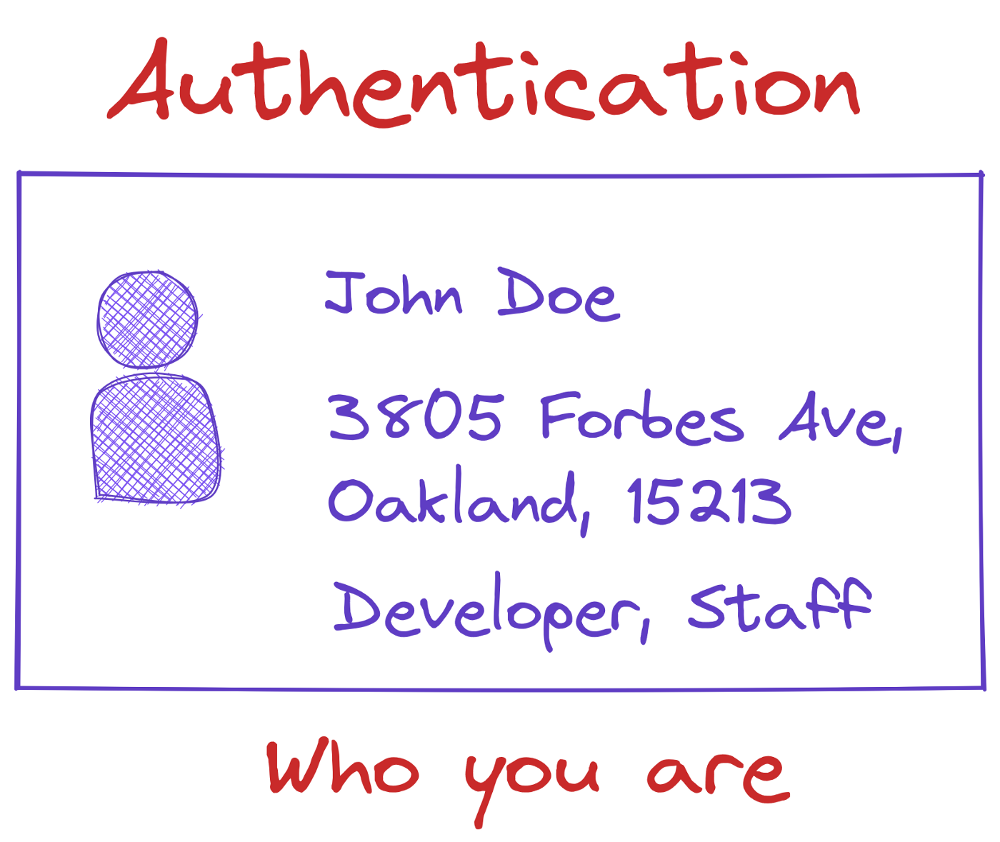

OWASP TOP 10
by YuliaN145
What is OWASP?
With cybercrime on the rise, distributed denial-of-service (DDoS) assaults, faulty access control, and data breaches occur frequently. The OWASP Foundation developed the OWASP Top 10 to help avoid these security concerns.
OWASP’s last “Top 10” list was published in 2017, which was recently updated in Q4 of 2021.
What Are the OWASP Top 10 Vulnerabilities for 2022?
1. Broken access control
Access control implements strategies to prevent users from operating beyond the scope of their specified permissions. Due to access vulnerabilities, unauthenticated or unwanted users may access classified data and processes and user privilege settings.
2. Cryptographic failures
Cryptographic failures, formerly known as sensitive data exposure, rose one spot to position two. This is more of a symptom than a primary cause; the emphasis here lies on cryptographic errors or lack thereof, which frequently expose sensitive data.
Typical examples of sensitive information exposure:
1.Session tokens
2.Login IDs and passwords
3.Online transactions
4.Personal information (switched service network or SSN, health records, etc.)
1.You should use robust, salted and adaptive hashing algorithms with a delay factor to store passwords, like scrypt, Argon2, PBKDF2 or bcrypt.
2.Older protocols such as file transfer protocol (FTP) and simple mail transfer protocol (SMTP) should be avoided when transferring sensitive data.
3.Instead of merely using encryption, it is advisable to implement authenticated encryption.
4.Cryptographically random keys must be produced and stored as byte arrays. If passwords are employed, it has to be changed into something like a key using an algorithm for password-based key creation.
3. Injections

Injection (or SQL injections) is a database attack against a website that uses structured query language (SQL) to obtain information or perform activities that would ordinarily need an authenticated user account. These codes are difficult for the program to interpret from its own code, allowing attackers to conduct injection attacks to gain access to protected areas and sensitive data masquerading as trusted users. Injections include SQL injections, command injections, CRLF injections, and LDAP injections, etc.

Insecure design is a wide category that contains a variety of problems, such as .”missing or inadequate control design.” That does not imply that insecure design is the root of all other top 10 risk categories.
2. Threat modeling is advised for crucial verification, access control, application logic, and essential flows.
3. Include security terminology and controls inside user stories.
4. Tenant segregation by design across all tiers is also seen as a practical preventative approach.
5. Security misconfigurations
General security setup issues, quite like misconfigured access controls, pose significant hazards by providing attackers with quick and easy access to critical data and site regions. To avoid configuration complications, secure installation techniques must be used
6. Vulnerable and outdated components
The majority of online apps are created with the help of third-party frameworks. Unknown application codes may result in undesirable outcomes and unwanted situations such as accent control violations, SQL injections, etc. If the program is insecure, unsupported, or outdated, there may be vulnerability-related hazards
7. Identification and authentication failures
When an attacker obtains user information, password recovery, ID sessions, and other login credentials, it poses security issues. As the name implies, an identity and authentication failure includes hackers exploiting such vulnerabilities to take advantage of inadequate authentication.
8. Software and data integrity failures
This is a new category, and it focuses on assuming the integrity of software updates, vital data, and CI/CD procedures without verifying them. One example is when applications use extensions, modules, or repositories from content delivery networks (CDNs) or unauthorized sources. A continuous integration/continuous delivery (CI/CD) process that is not protected might raise the risk of malicious code, system compromise or unauthorized access.
9. Security logging and monitoring failures
1.Verify that all authentication, access security systems, and server-side data validation problems are recorded with sufficient user information to detect suspicious or fraudulent accounts and stored for an adequate period to a delayed comprehensive investigation.
2.Make sure that logs are created in formats consumable by log management systems.
3.Ensure that log data is encoded appropriately to avoid intrusions or cyber threats to the monitoring systems.
10. Server-side request forgery (SSRF)
1. To limit the effects of SSRF, one should separate remote resource access functions into distinct networks.
2. Install “deny by default” firewall settings or network access control rules for blocking all web traffic except for required internal traffic.
3. To protect against attacks like DNS remapping and “time of check, time of usage,” in (TOCTOU) situations, it’s good to be conscious of URL accuracy.